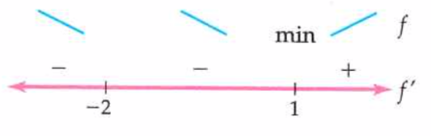
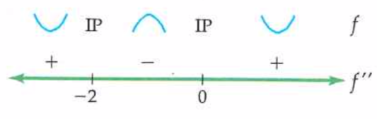

In this section, we focus on sketching accurate graphs of rational functions by hand (as much as possible), using information calculated from the first and second derivatives. We must also be concerned with identifying any points where the function is undefined and determining the behavior of the function at those points via limits (either finding a hole or a vertical asymptote). Additionally, the end-behavior of rational functions may be infinite, or the function may have a horizontal asymptote. Below is a summary of all of the information we will collect and use in our graphs:
any \(x\)-intercepts that we can find easily (many times this is not possible without more advanced algebraic methods). Potentially a sign analysis for the function itself that shows where it is above and below the \(x\)-axis, but this requires complete knowledge of all \(x\)-intercepts.
the behavior of the function at any non-domain points, meaning the limits as \(x\to c\) for any value \(x=c\) not in the domain of the function. We make special note of any holes or vertical asymptotes.
To begin graphing the function, we first plot all of the intercepts, holes, local minima and maxima, and inflection points. We draw dashed vertical lines for any vertical asymptotes, and dashed horizontal lines for any horizontal asymptotes. Then we "connect the dots" using the following four possible shapes of nonlinear functions:
It has been several chapters since we thought about even and odd symmetry, so here is a quick reminder. For a more thorough review, you could reread Subsection 2.10.3.
Remember that a function \(f(x)\) is called even if \(f(-x)=f(x)\text{.}\) This means that it has reflectional symmetry across the \(y\)-axis. A function \(f(x)\) is called odd if \(f(-x)=-x\text{.}\) An odd function has \(180^\circ\) rotational symmetry about the origin, or equivalently is the same if reflected over both the \(x\)- and \(y\)-axes.
While not essential for sketching the graph of a function, recognizing any symmetry present can help you catch errors and can be used as a short-cut while carrying out these lengthy computations.
Subsection5.7.3Examples of Sketching Polynomial Functions
Each of the following examples is quite long, though each individual step is manageable enough. When carrying out your own "curve sketch," make sure to organize your work and keep careful track of whether you are using information from the original function, the first derivative, or the second derivative. It is often useful to keep a list of "key points" discovered (intercepts, local max/mins, inflection points). Alternately, you can begin your graph early and add each point as it is discovered.
and we see that there are \(x\)-intercepts at \(x=0\) and \(x=\pm\sqrt{15}\approx \pm 3.87\text{.}\) Notice that \(x=0\) was also the \(y\)-intercept. We can additionally draw a number line for where the function \(g\) is positive and negative, which will be useful when we go to draw the function:
This confirms the accuracy of the previous sign analysis for \(g(x)\text{:}\) if \(g(x)\) is positive at a certain \(x\)-value \(x=a\text{,}\) it will be negative at the value \(x=-a\text{,}\) and vice versa. For instance, \(g(-1)\) is positive while \(g(1)\) is negative. Additionally, if we had not found both \(x\)-intercepts \(x=\pm \sqrt{15}\text{,}\) this would have told us that we were missing one. (Finding only \(x=+\sqrt{15}\) is a fairly common error.)
There are no non-domain points of \(g(x)\) since \(g(x) = x^5-15x^3\) is a polynomial. In particular, there are no holes or vertical asymptotes in the graph of \(g(x)\text{.}\)
Recall that for limits of the form \(\infty-\infty\text{,}\) we can determine the precise behavior by force-factoring the highest power of \(x\text{.}\) Thus
So \(g(x)\) has critical points at \(x=-3, 0, 3\) where \(g'(x)=0\text{.}\) Polynomials are differentiable everywhere and so we will never have critical points for them where \(g'(x)\) is undefined. The sign analysis for the first derivative is \(g\) is increasing on \((-\infty,-3)\cup(3,\infty)\) and decreasing on \((-3,0)\cup(0,3)\text{.}\) Thus we see that \(g\) has a local maximum at \(x=-3\text{,}\) a local minimum at \(x=3\text{,}\) and neither a min nor a max at \(x=0\text{.}\) The \(y\)-value for the local maximum at \(x=-3\) is \(g(-3) = (-3)^5-15(-3)^3 = 162\text{.}\) So there is a local maximum at the point \((-3,162)\text{.}\)
The \(y\)-value for the local minimum at \(x=3\) is \(g(3) = (3)^5-15(3)^3 = -162\text{.}\) So there is a local minimum at the point \((3,-162)\text{.}\) (Again, confirmed via odd symmetry.) We can also confirm from the sign analysis for \(g(x)\) that the \(y\)-value at \(x=-3\) should be positive while the \(y\)-value at \(x=3\) should be negative.
We can see that \(g''(x)\) is equal to zero when \(x=0\) or when \(2x^2-9=0\text{,}\) so when \(x^2=9/2\text{,}\) meaning \(x=\pm\sqrt{9/2} = \pm 3/\sqrt{2}\approx\pm 2.12\text{.}\) The sign analysis for the second derivative is \(g\) is concave down on \((-\infty,-3/\sqrt{2})\cup(0,3/\sqrt{2})\) and concave up on \((-3/\sqrt{2},0)\cup(3/\sqrt{2},\infty)\text{.}\) Thus we see that \(g\) has inflection points at \(x=\pm3/\sqrt{2}\) and \(x=0\text{.}\) The \(y\)-value of the inflection point at \(x=0\) is \(y=g(0)=0\text{,}\) the same as the \(y\)- and \(x\)-intercept found earlier. We can find the \(y\)-values of the inflection points at \(x=-3/\sqrt{2}\) and \(x=3/\sqrt{2}\) with one calculation thanks to the odd symmetry of \(g(x)\text{:}\)
On your own paper, begin to sketch \(g(x)\) by plotting the key points identified above, namely the \(x\)- and \(y\)-intercepts, local maximum and minimum, and inflection points:
Now connect the dots with appropriate arcs according to the sign information in the first and second derivative sign analyses. It can help to collect all of the information about the derivatives in one place, such as the tables in the previous section. Below we demonstrate another way to organize this information and you may use whatever method works best for you. The arc shapes on each subinterval between key points are recorded on the combined number-line that follows. Notice that on this number line, the tick-marks represent the locations of all key points on the graph of \(g\text{,}\) meaning that they are a composite of the tick-marks from the sign charts for \(g,
g'\) and \(g''\text{:}\)
which matches the odd symmetry and also the information from the first derivative that \(g(x)\) is increasing on \((-\infty,-3)\) and on \((3,\infty)\text{.}\) Putting all of this information together onto a graph with appropriately labeled axes, we sketch
The main goal for any of these sketches is to get a good overall sense of the shape of the graph. Some things to note about the "accuracy" of the graph in the previous example:
The scales of the two axes are different from each other and are appropriate for highlighting the overall shape of the graph. This is preferable to having a graph with comparable scales but indistinguishable features.
Increasing/decreasing behavior and concavity clearly change at each labeled point as appropriate, and at no other points. In particular, no part of the graph appears to be a straight line, nor does any part of the graph appear to be vertical or entirely horizontal.
but cannot factor further. This tells us that there is an \(x\)-intercept at \(x=0\text{,}\) which is also the \(y\)-intercepts at the point \((0,0)\text{.}\) There are potentially up to three other \(x\)-intercepts that we cannot find algebraically.
We can see that \(f(-x)\neq f(x)\text{,}\) so \(f(x)\) is not even and does not have reflectional symmetry across the \(y\)-axis. \(f(-x)\neq -f(x)\) as well since \(-f(x) = -x^4-4x^3+16x\text{,}\) so \(f(x)\) is also not odd and does not have \(180^\circ\) rotational symmetry about the origin. \(f(x)\) is neither even nor odd and there are no helpful symmetries that we can use to save us time in sketching the graph.
There are no non-domain points of \(f(x)\) since \(f(x) = x^4+4x^3-16x\) is a polynomial. In particular, there are no holes or vertical asymptotes in the graph of \(f(x)\text{.}\)
The end-behavior of \(f(x)\) is found by computing the limits at \(\pm\infty\text{,}\) which both result in a limit form of \(\infty-\infty\text{,}\) and so we force-factor. Thus
Therefore the only critical points of \(f\) are \(x=1\) and \(x=-2\text{.}\) The sign analysis of \(f'\) tells us that \(x=-2\) is neither a local minimum nor local maximum, and that \(x=1\) is a local minimum, since \(f(x)\) is decreasing on \((-\infty,-2)\cup(-2,1)\) and increasing on \((1,\infty)\text{:}\)

Figure5.7.5.\(f(x)\) is decreasing on \((-\infty,-2)\cup(-2,1)\) and increasing on \((1,\infty)\text{.}\) There is a local minimum at \(x=1\text{.}\)
Creating a sign analysis for \(f''(x)\) using intervals between \(x=-2\) and \(x=0\) where \(f''(x) = 0\text{,}\) we can see that \(f(x)\) is concave up on \((-\infty,-2)\) and \((0\infty)\) and concave down on \((-2,0)\text{.}\) This means that \(x=-2\) and \(x=0\) are inflection points:

Figure5.7.6.\(f(x)\) is concave up on \((-\infty,-2)\) and \((0,\infty)\) and concave down on \((-2,0)\text{.}\) There are inflection points at \(x=-2\) and \(x=0\text{.}\)
The \(y\)-value for the inflection point at \(x=-2\) is \(y=f(-2) = (-2)^4+4(-2)^3-16(-2) = 16\text{,}\) so the inflection point is at the coordinates \((-2,16)\text{.}\) The \(y\)-value for the inflection point at \(x=0\) is \(y=f(0)=0\text{,}\) so the other inflection point of \((0,0)\) is also the \(x\)- and \(y\)-intercept.
On your own paper, begin to sketch \(f(x)\) by plotting the key points identified above, namely the \(x\)- and \(y\)-intercepts, local maximum and minimum, and inflection points:
Next, determine which of the four shapes the graph has between each of these points based on whether the graph is increasing/decreasing and concave up/down. This information is summarized in the table below:
Lastly, we connect the key points using appropriately shaped arcs, making sure to accurately represent precisely where the function changes concavity or switches between increasing and decreasing. Note in particular that the graph should appear to have a horizontal tangent line at the inflection point \((-2,16)\text{,}\) since the first derivative was indeed equal to zero at \(x=-2\text{:}\)
We can confirm that there is no even or odd symmetry to the graph, and the end-behavior is correct. The points are all labeled, and the scale of both axes is appropriate for making the overall shape of the graph visible.
We can see that there is indeed another \(x\)-intercept that we have not found. It does not appear to be passing through an integer \(x\)-value, so attempting to factor \(f(x)\) further to find its exact value does not look like a good use of our time.
In our last example, we sketch the graph of a function whose first derivative is known but without knowing the precise formula for the original function. Because of this, we will not be able to plot any of the key points with explicit \(y\)-values, though we can still put them in the correct relative positions to each other based on the roles they play in the shape of the graph. We also cannot complete steps (a)-(e) of the curve sketching summary that require knowledge of the function \(f(x)\text{,}\) and skip to completing parts (f) and (g):
With only this information, we can construct both first and second derivative sign charts for \(f\text{,}\) discuss where \(f\) is increasing and decreasing and concave up and concave down, identify all local extrema and inflection points, and sketch a possible graph of \(f\text{.}\) Note that since \(f'(x)\) exists for all \(x\text{,}\) we know that \(f(x)\) is differentiable, thus continuous, for all \(x\text{.}\)
Since we know \(f'(x) = 3x^4-9x^2\text{,}\) we can find the critical points of \(f(x)\) by solving \(3x^4-9x^2 = 0\text{.}\) Factoring, we observe that
so that \(x=0\) and \(x= \pm\sqrt{3}\approx\pm1.73\) are the three critical points of \(f(x)\text{.}\) The sign analysis for the first derivative is We see that \(f\) is increasing on \((-\infty,-\sqrt{3})\cup(\sqrt{3},\infty)\) and \(f\) is decreasing on \((-\sqrt{3},0)\cup(0,\sqrt{3})\text{.}\)\(f\) has a local maximum at \(x=-\sqrt{3}\) and a local minimum at \(x=\sqrt{3}\text{,}\) and neither a minimum nor a maximum at \(x=0\text{.}\)
This equation has solutions \(x=0\) and \(x= \pm\sqrt{\frac{3}{2}}\approx1.22\text{.}\) Building a sign chart for \(f''\text{,}\) we see Therefore \(f\) is concave down on \(\left(-\infty,-\sqrt{\frac{3}{2}}\right)\cup\left(0,\sqrt{\frac{3}{2}}\right)\) and concave up on \(\left(-\sqrt{\frac{3}{2}},0\right)\cup\left(\sqrt{\frac{3}{2}},\infty\right)\text{.}\) There are inflection points at \(x=0, \pm\sqrt{\frac{3}{2}}\text{.}\)
Putting all of this information together, we get a fairly accurate possible graph of \(f(x)\text{,}\) despite not knowing any of the actual \(y\)-values of \(f(x)\text{.}\)
There is a local maximum at \(x=-\sqrt{3}\text{,}\) labeled with the letter \(A\text{.}\)
There are many different possible formulas. Double-check that your function \(f(x)\) really does have the correct first derivative, then use it to complete steps (a)-(f) of the curve sketch summary that we skipped in Example Example 5.7.9. Lastly, find the precise \(y\)-values using your formula for \(f(x)\) and sketch the graph of \(f(x)\) using those \(y\)-values. If you have done everything correctly, it should have the same overall shape as the graph at the end of Example Example 5.7.9.
Subsection5.7.4Some general observations about graphs of polynomials
We discussed in Section 2.5 that the degree of a polynomial determines an upper bound for the number of its \(x\)-intercepts and also of its turning points, a.k.a. local maxima and minima; revisit Theorem Theorem 2.5.13 if you do not remember. It turns out that the \(x\)-intercepts of the polynomial can give us a lower bound for the number of turning points.
By the Mean Value Theorem (Theorem 5.3.2), between every two \(x\)-intercepts of a polynomial \(f(x)\) must lie at least one zero of its derivative (where \(f'(c)=0\)). In fact, we can guarantee even more: Between each adjacent pair of \(x\)-intercepts of \(f(x)\) there must be some zero of \(f'(x)\) at which the graph of \(f(x)\) actually turns around and has a local maximum or minimum value. This observation is summarized in the following useful theorem:
Theorem5.7.12.Turning Points Between Zeros of Polynomials.
If \(f\) is a polynomial function of degree \(n\) with \(k\) real zeros, then \(f\) has at least \(k-1\) turning points, with at least one turning point between each zero.
As a corollary (in other words, an immediate consequence) to this theorem, notice that if a polynomial of degree \(n\) splits into \(n\) distinct linear factors, then it will have the maximum number \(n\) of \(x\)-intercepts and also the maximum number \(n-1\) of turning points, one between and/or at each \(x\)-intercept. If the polynomial splits into \(k\) linear factors, some of which are repeated, then it will have exactly \(k-1\) turning points, one between each \(x\)-intercept.
Subsection5.7.5Reviewing Asymptotes and Limit Calculations
Hopefully you remember how to find holes, vertical asymptotes, and horizontal asymptotes. If not, revisit the appropriate section below based on the information you have forgotten:
Vertical and horizontal asymptotes are defined in Subsection 3.4.3.
Determining end-behavior of rational functions is discussed in Subsection 3.6.4. In particular, this section covers how to evaluate \(\frac{\infty}{\infty}\) limits.
\(f(x) = \frac{x}{1+x^2}\) is defined for all real numbers since \(1+x^2\) is never equal to zero. Indeed, if we try to solve for values of \(x\) that make the denominator zero:
we can see that there are no such \(x\)-values since the square of any number must be 0 or positive. Alternately, if we tried to take the square root of both sides, we would be taking the square root of a negative number, which is not possible (in this class). Thus the domain of \(f(x)\) is
\(f(x)\) is equal to zero when its numerator is equal to zero, so when \(x=0\text{.}\) Thus we see that the only \(x\)-intercept of \(f(x)\) is the same point \((0,0)\) that we found as the \(y\)-intercept. Since we have been able to find all of the \(x\)-intercepts and points where \(f(x)\) is undefined, we can create a sign analysis for \(f(x)\text{:}\)
Because \(f(x)\) is rational, thus algebraic, and is defined for all real numbers, it is also continuous for all real numbers, and thus cannot have any vertical asymptotes or holes.
The limits as \(x\to\pm \infty\) of \(f(x)\) are both indeterminate of the form \(\frac{\infty}{\infty}\) and so require algebraic methods to evaluate. Dividing through by \(x^2\text{:}\)
\(f'(x) = 0\) when \(1-x^2 = (1-x)(1+x) = 0\text{.}\)\(f'(x)\) is never undefined as we have already noted that \(1+x^2\) is never zero. Thus \(f\) has critical points at \(x=\pm1\text{.}\) The sign analysis for \(f'\) is Thus \(f\) is decreasing on \((-\infty,-1)\) and \((1,\infty)\) and increasing on \((-1,1)\text{.}\) There is a local minimum at \(x=-1\) where \(y=f(-1) = \frac{-1}{1+(-1)^2} = -\frac{1}{2}\text{.}\) There is a local maximum at \(x=1\) where \(y=f(1) = \frac{1}{1+(1)^2} = \frac{1}{2}\text{.}\)
\(f''(x)=0\) when \(2x(x^2-3)=0\text{,}\) so when \(x=0\) or \(x^2-3=0\text{.}\) Solving this last equation, \(x^2=3\text{,}\) meaning \(x=\pm\sqrt{3}\approx 1.732\text{.}\)\(f''(x)\) is never undefined as we have already noted that \(1+x^2\) is never zero. Thus \(f'\) has critical points at \(x=0,\pm\sqrt{3}\text{,}\) that may or may not be inflection points. The sign chart for \(f''\) is Hence \(f\) is concave down on \((-\infty,-\sqrt{3})\) and \((0,\sqrt{3})\) and is concave up on \((-\sqrt{3},0)\) and \((\sqrt{3},\infty)\text{.}\)\(f\) has inflection points at \(x=0\) where \(y=f(0)=0\text{,}\) at \(x=-\sqrt{3}\) where \(y=f(-\sqrt{3}) = \frac{-\sqrt{3}}{1+(-\sqrt{3})^2} = -\frac{\sqrt{3}}{4}\approx -0.433\text{,}\) and at \(x=\sqrt{3}\) where \(y=f(\sqrt{3}) = \frac{\sqrt{3}}{1+(\sqrt{3})^2} = \frac{\sqrt{3}}{4}\approx 0.433\text{.}\)
Next, we determine which of the four shapes the graph has between each of these points based on whether the graph is increasing/decreasing and concave up/down. This information is summarized in the table below:
Use the second derivative test to confirm that \(f(x) = \frac{x}{1+x^2}\) from Example Example 5.7.13 has a local minimum at \(x=-1\) and a local maximum at \(x=1\text{.}\)Remember: there are often multiple ways to determine the same answer, and all of the different methods should agree with each other.
\(g(x)\) is undefined when its denominator is equal to zero, so we see that \(g(x)\) is undefined at \(x=1\text{.}\) Thus \(g(x)\) has domain \((-\infty,1)\cup(1,\infty)\text{.}\)
The \(x\)-intercept of \(g(x)\) is where its numerator, \(x^2\text{,}\) is equal to zero, so when \(x=0\text{.}\) Thus the only \(x\)-intercept is the point \((0,0)\) that is also the \(y\)-intercept. Since we can rewrite \(g(x) = \dfrac{x^2}{(x-1)^2}\text{,}\) we can tell without a sign analysis that \(g(x)\) will always be above the \(x\)-axis when it is not equal to zero. This is because both the numerator and denominator are squared, hence cannot be negative.
\(g(x)\) is undefined at \(x=1\) where the denominator is equal to 0, so we suspect that it has a vertical asymptote there. Calculating the limit as \(x\to 1\) explicitly:
We calculate \(\lim_{x\to\pm\infty}\) by force-factoring \(x^2\) from the denominator, since both limits have the indeterminate form \(\frac{\infty}{\infty}\text{:}\)
\(g'(x)\) is zero when its numerator is zero, meaning when \(x=0\text{.}\) It is undefined when its denominator is zero, so when \(x=1\text{.}\) Only \(x=0\) is a critical point, but \(g'(x)\) may change sign at either \(x=0\) or \(x=1\) and so we put both on the number line for \(g'(x)\text{:}\)
So \(g(x)\) is decreasing on \((-\infty,0)\) and \((1,\infty)\) and increasing on \((0,1)\text{.}\) Note that this confirms that both sides of the vertical asymptote at \(x=1\) approach \(+\infty\text{.}\)\(g(x)\) has local minimum at the critical point \(x=0\) where \(y=0\text{,}\) so at the \(x\)- and \(y\)-intercept that we found earlier.
\(g''(x)\) is equal to zero when \(2(2x+1)=0\) so when \(x=-\frac{1}{2}\) and is undefined when \(x=1\text{,}\) as expected. The critical point for \(g'(x)\) is \(x=-\frac{1}{2}\) and NOT \(x=1\text{,}\) since \(g'(x)\) was also undefined when \(x=1\text{.}\) The sign analysis for \(g''(x)\) is: Thus \(g(x)\) is concave down on \(\left(-\infty,-\frac{1}{2}\right)\) and is concave up on \(\left(-\frac{1}{2},1\right)\) and on \((1,\infty)\text{.}\) There is an inflection point at \(x=-\frac{1}{2}\) where \(y=f\left(-\frac{1}{2}\right) = \frac{\left(-\frac{1}{2}\right)^2}{(1+\frac{1}{2})^2} = \frac{1/4}{9/4} = \frac{1}{9}\text{.}\)
Next, we determine which of the four shapes the graph has between each of these points based on whether the graph is increasing/decreasing and concave up/down. This information is summarized in the table below:
Conjecture: In both Example Example 5.7.13 and Example Example 5.7.16, the rational functions had the same horizontal asymptotes to the right and left. Do you think it is always the case that a rational function with a horizontal asymptote will have the same value for both \(x\to\infty\) and \(x\to-\infty\text{?}\) Why or why not?
The last function we sketch will be significantly complicated in order to illustrate some of the other types of behaviors you are likely to see when sketching rational functions. If you are already feeling fatigued, it’s probably a good idea to take a break before returning to read this last example.
but \(h(1)\) is undefined. Thus the only \(x\)-intercept of \(h(x)\) is at the point \((-2,0)\text{.}\) A sign analysis of \(h(x)\) tells us where the graph of \(h(x)\) is above or below the \(x\)-axis. We must check the sign of \(h(x)\) on each subinterval between the \(x\)-intercept and non-domain points:
Comparing \(h(-x)\) to \(h(x)\) and \(-h(x)\) is quite challenging with \(h(x)\) factored as it is. The best way to determine whether \(h(x)\) is even or odd is to first expand \(h(x)\text{:}\)
We can see that \(h(-x)\) is not equal to \(h(x)\) as it is written, and also checking that it still is not equal after factoring and cancelling a \(-1\) from both the numerator and denominator:
Since \(h(x)\) is undefined at \(x=-1, 1\text{,}\) and \(2\text{,}\) we must evaluate the limits at all three of these \(x\)-values. At \(x=-1\text{:}\)
and so there is a vertical asymptote at \(x=-1\text{.}\) In order to determine the precise behavior, we take the limits from the left and right. Note that the factor \(x+1\) in the denominator is negative as \(x\to -1^-\) and is positive as \(x\to -1^+\text{:}\)
and so there is a vertical asymptote at \(x=2\text{.}\) In order to determine the precise behavior, we take the limits from the left and right. Note that the factor \(x-2\) in the denominator is negative as \(x\to 2^-\) and is positive as \(x\to 2^+\text{:}\)
The expanded form of \(h(x)\) that we found earlier is simpler to use when finding the limits as \(x\to\pm\infty\text{.}\) Both limits have the indeterminate form \(\frac{\infty}{\infty}\) and so we calculate the limits dividing through by \(x^3\text{:}\)
Since we already found the hole at \(x=1\text{,}\) let’s work with the simplified function that results from canceling one factor of \(x-1\) from the numerator and denominator:
When looking for critical points, we set both the numerator equal to zero (to determine where \(h'(x)=0\)) and the denominator equal to zero (to determine where \(h'(x)\) is undefined). Setting the numerator equal to zero:
From this, we can see that \(h'(x)\neq 0\) for any \(x\)-values. Setting the denominator equal to zero:
\begin{equation*}
(x+1)^2(x-2)^2=0 \Longleftrightarrow x = -1,2
\end{equation*}
and so \(h'(x)\) is undefined when \(x = -1,2\text{.}\) However, these are not critical points because they are not in the domain of \(h(x)\text{.}\) Thus \(h(x)\) has no critical points. In the sign analysis for \(h'(x)\text{,}\) we must remember that \(h(x)\) is undefined at \(x=-1,1\text{,}\) and \(2\text{,}\) and so could change sign at any of those \(x\)-values, despite the lack of critical points: We can see that since \(h'(x)\) is always negative, hence \(h(x)\) is always decreasing. There are no local minima or maxima.
Before we move on to the second derivative, notice that calculating derivatives of rational functions is a significant challenge, especially since we would like to be able to factor the result. Lacking more advanced algebraic techniques for factoring, a key skill to develop is to take derivatives in such a way that the result is left as factored as possible. In particular, we do not want to expand the denominator of \(h'(x)\) before taking its derivative. In fact, we will leave it fully factored and instead opt to use the product rule when taking the derivative of the denominator:
This is as far as we can proceed with algebra. We are familiar enough with cubic polynomials to know that the factor of \(x^3-6x-2\) in the numerator must have at least one zero. Using https://www.wolframalpha.com/ 3
we are told that \(x=\sqrt[3]{2}(\sqrt[3]{2}-1)\approx 0.32748\text{.}\) Thus we see that \(h''(x)=0\) for \(x\approx 0.32748\text{.}\) Setting the denominator equal to zero, we see that \(h''(x)\) is undefined for \(x=-1,2\text{,}\) as we expect. Recall that \(x=1\) is also not in the domain of the original form of \(h(x)\text{,}\) so \(h''(x)\) is also undefined for \(x=1\text{.}\) Creating a sign analysis for \(h''(x)\text{:}\) Hence we see that \(h(x)\) is concave down on \((-\infty,-1)\) and \((0.32748,2)\text{,}\) and is concave up on \((-1,0.32748)\) and \((2,\infty)\text{.}\) Thus \(h(x)\) has an inflection point at \(x\approx 0.32748\) where
There cannot be inflection points at \(x=-1\) and \(x=2\) because they are not in the domain of the function. Note that \(h''(0.32748)\approx 9.58\times 10^{-9}\) is not zero, so the inflection point is not at \(x=0.32748\text{.}\) However, it is very close.
Asymptotes and/or Holes Vertical asymptotes at \(x=-1\) and \(x=2\text{.}\) A hole at \((1,0)\text{.}\) Horizontal asymptote at \(y=2\) to the right and left.
We can see that there are no key points to the right of the vertical asymptote at \(x=2\text{,}\) which may make it harder for us to "connect the dots" without any dots. There is nothing stopping us from plotting an extra point (or several). For instance, we can easily find
Recall that \(h(x)\) is decreasing everywhere on its domain. Recalling the concavity, we summarize the shape of \(h(x)\) from left to right on the graph between all of the key features:
\(h(x)\) is decreasing and concave down on \((-\infty,-1)\text{,}\) which fits between the horizontal asymptote to the left and the vertical asymptote at \(x=-1\text{,}\) passing through the \(x\)-axis at the point \((-2,0)\text{.}\)
\(h(x)\) is decreasing and concave up from the vertical asymptote at \(x=-1\) through the \(y\)-intercept at \((0,2)\text{,}\) up until the inflection point at approximately \((0.32748, 1.41001)\text{.}\)
\(h(x)\) is decreasing and concave down from the inflection point at \((0.32748, 1.41001)\) through the hole at \((1,0)\) and leading up to the vertical asymptote at \(x=2\text{.}\)
\(h(x)\) is decreasing and concave up from the vertical asymptote at \(x=2\) to the far right edge of the graph, which fits with the horizontal asymptote to the right of the graph at \(y=2\text{.}\)
In particular, note that the precise behavior of the vertical asymptotes we calculated matches the first-derivative information that the graph must be decreasing for all \(x\)-values.
Key ideas: In order to graph a rational function by hand, we determine the domain, intercepts, symmetry, vertical asymptotes and holes, end-behavior, and first- and second-derivative information for the function. We plot key points (intercepts, asymptotes, holes, local extrema, inflection points), summarize the behavior of the graph between each feature (increasing/decreasing, concave up/down), and then connect the points using the four possible shapes of nonlinear functions.
Other ideas reinforced/introduced: A polynomial function must have a local minimum or maximum between each of its \(x\)-intercepts. Using only information about the first and second derivative of a function, we can still get a remarkably accurate graph without knowing any precise \(y\)-values. Rational functions have vertical asymptotes and/or holes at points where they are undefined, depending on how the function cancels while taking the limit. Rational functions may also have horizontal asymptotes.